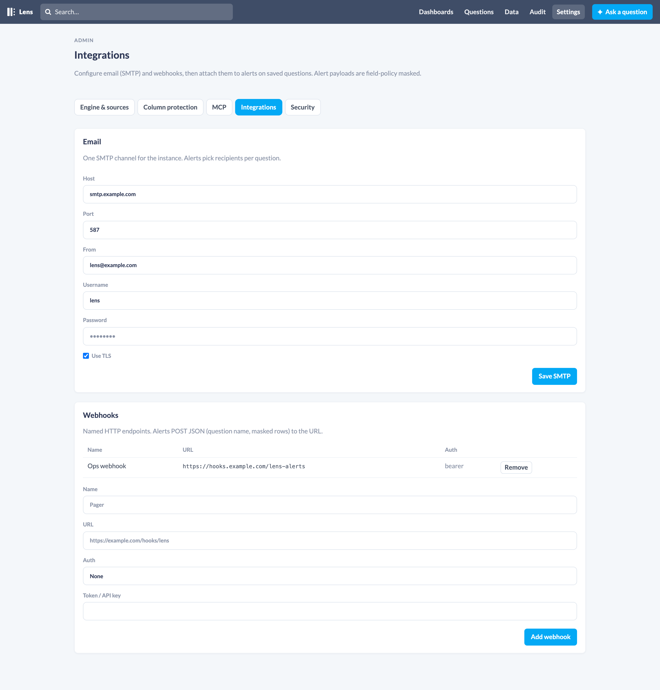

Lens can re-run a saved question on a schedule and notify you by email or webhook when a condition is met. Same field policy as the UI: protected cells stay [redacted].
This follows the Metabase idea: alerts are for questions, destinations are configured first, then attached to the question. Slack is not included; use a webhook into Slack or any other receiver.
Configure integrations

Settings → Integrations (/lens/settings/integrations).
One SMTP channel for the instance:
- Host, port, TLS, username, password, from address
Alerts then pick recipients per question. Sending mail needs {:gen_smtp, "~> 1.2"} in the host app (the dummy app already has it). You can also set app env:
config :phoenix_lens,
smtp: [
host: "smtp.example.com",
port: 587,
tls: true,
username: System.get_env("SMTP_USERNAME"),
password: System.get_env("SMTP_PASSWORD"),
from: "lens@example.com"
]Webhooks
Named HTTP endpoints. Each has a URL and optional Bearer token or API-key header.
When an alert fires, Lens POSTs JSON:
{
"type": "alert",
"alert_id": 1,
"alert_condition": "rows",
"sent_at": "2026-09-07T12:00:00Z",
"data": {
"type": "question",
"question_id": 5,
"question_name": "Users (PII masked)",
"raw_data": { "cols": ["id", "contact"], "rows": [[1, "[redacted]"]] },
"num_rows": 1,
"masked_columns": ["contact"]
}
}Create an alert
- Save the question.
- Open it and click Alert.
- Choose when to fire:
- any rows / no rows
- above / below a numeric goal (first numeric, non-masked cell)
- Choose how often to check: 1m, 5m, 15m, hourly, 6h, daily.
- Add email addresses and/or webhooks.
- Optionally Only send once, then disable.
Send now runs the question immediately and delivers if the condition is met.
A scheduler in the Lens OTP app checks due alerts about every 30 seconds. Audit actor is alert:<id>.
MCP
list_integrations, save_email_integration, add_webhook, remove_webhook, list_alerts, create_alert, delete_alert, run_alert.